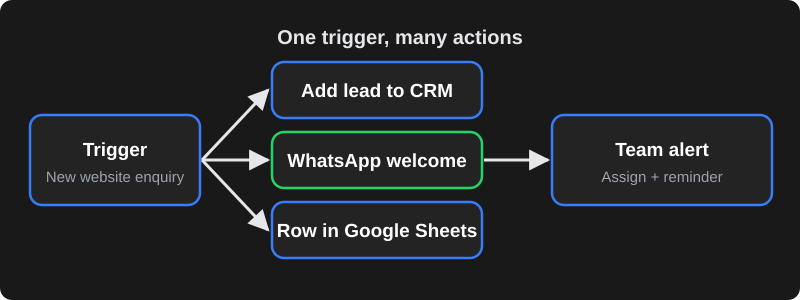

What these tools actually do
All three are workflow automation platforms. A workflow starts with a trigger (a new form entry, a new WooCommerce order, a new row in Google Sheets, a scheduled time) and runs a series of actions (create a CRM lead, send a WhatsApp or email message, update a spreadsheet, post to Slack). Instead of a staff member copying data between apps, the workflow does it in seconds, every time.

The quick verdict
- Choose Zapier if you want the simplest setup, the largest catalogue of ready-made app connections, and you run relatively few, simple automations.
- Choose Make if you want a visual builder with branching, loops and data transformation at a lower cost per operation than many alternatives.
- Choose n8n if you want maximum flexibility, the option to self-host on your own server for data control, and you have (or hire) someone technical.
Side-by-side comparison
| Zapier | Make | n8n | |
|---|---|---|---|
| Pricing model | Subscription based on number of tasks per month | Subscription based on operations/credits per month | Cloud plans based on workflow executions; self-hosted Community Edition is free to run (you pay for the server) |
| Self-hosting | No | No | Yes |
| Ease of use | Easiest; linear steps | Moderate; visual canvas | Moderate to technical; visual canvas plus code |
| App integrations | Largest catalogue | Large catalogue | Good catalogue plus a generic HTTP node for any API |
| Complex logic | Paths and filters; can get expensive | Strong: routers, iterators, aggregators | Strong: branching, loops, JavaScript/Python code nodes |
| AI features | AI steps and agents available | AI modules available | Strong AI/agent nodes, works with many model providers |
| Data control | Data processed on Zapier's cloud | Data processed on Make's cloud | Self-host to keep data on your own infrastructure |
| Best for | Small teams, quick wins | Growing teams with multi-step processes | Tech-savvy teams, high volume, privacy-sensitive data |
Pricing, plan limits and features change regularly, and all three bill in US dollars by default. Check each tool's current pricing page and estimate your monthly volume before deciding.
Zapier: easiest to start
Zapier's strength is simplicity. You pick a trigger app, pick an action app, map the fields and switch it on. For a small business connecting a website form to Google Sheets and Gmail, it can be running in minutes.
The trade-off is cost at scale. Because pricing is based on tasks, a workflow with many steps that runs hundreds of times a day can move you into higher plans quickly. Complex branching is possible but less flexible than the other two.
Make: visual and flexible
Make (formerly Integromat) shows your workflow as a canvas of connected modules. It handles arrays, loops, routers and data mapping well, which makes it a favourite for multi-step processes such as syncing orders between systems or processing every line item in an invoice.
The learning curve is steeper than Zapier, and you need to understand how operations are counted to predict costs — every module run usually counts.
n8n: most control, self-hostable
n8n is a "fair-code" platform you can use as a managed cloud service or run yourself on a VPS or your company server. Self-hosting means no per-task fees from the platform and your customer data never leaves infrastructure you control — useful for clinics, finance and businesses with strict data policies.
It also lets developers drop into JavaScript or Python inside a workflow, call any API with the HTTP node, and build AI agents that use your own tools. The trade-off: self-hosting means you are responsible for updates, backups, security and uptime.
Example workflows for Indian businesses
| Business | Trigger | Actions |
|---|---|---|
| Coaching centre | New enquiry from website or Meta lead form | Add to Google Sheet/CRM → WhatsApp welcome message → assign counsellor → reminder if not called in 2 hours |
| Online store | New WooCommerce/Shopify order | WhatsApp confirmation → add to shipping tool → daily sales summary to the owner |
| Clinic | New appointment booked | Confirmation message → reminder the day before → feedback request after the visit |
| Real estate | Lead from a property portal or ad | Deduplicate → assign to agent by area → WhatsApp brochure → follow-up sequence |
| Accounts team | Invoice PDF received by email | Extract data with AI → add to sheet/accounting → alert if amount is above a limit |
When custom code is better
No-code tools are not always the answer. Custom code (a small Node.js or Python service, or a WordPress/Laravel module) is often better when:
- You run very high volumes and per-task pricing becomes expensive.
- The logic is core to your business and needs proper testing, version control and error handling.
- You need real-time responses inside your website or app (for example, checkout or login flows).
- An integration needs unusual authentication or an API the tools don't support well.
Many businesses end up with a mix: no-code workflows for internal admin tasks and custom code for customer-facing, business-critical flows.
Costs beyond the subscription
The plan price is only part of the real cost. Before you commit, budget for:
- Connected app costs. Some actions need paid plans in the apps you connect — for example API access in a CRM, or WhatsApp message charges from Meta.
- AI usage. Workflows that summarise emails or extract invoice data call an AI model, which is billed by the AI provider based on usage.
- Server costs for self-hosting. A self-hosted n8n instance needs a VPS, backups and a domain with HTTPS. The server bill is usually small, but someone's time to maintain it is not free.
- Build and change time. The first version of a workflow is quick; handling edge cases (duplicate leads, missing phone numbers, API timeouts) takes longer and is where most of the value is.
- Currency and taxes. International SaaS tools usually bill in US dollars, so card charges vary with exchange rates, and GST may apply.
A useful habit: for each workflow, write down how many minutes of manual work it saves per week. If a workflow saves five hours a week of staff time, even a paid plan pays for itself quickly; if it saves ten minutes, it may not be worth maintaining.
Making automations reliable
The biggest risk with automation isn't the tool — it's workflows that fail quietly. A form integration that silently stops for a week can cost you dozens of leads. Whatever platform you choose:
- Turn on error notifications to an email or WhatsApp group someone actually checks.
- Add retries for steps that call external APIs, and a fallback (for example, save the lead to a sheet even if the CRM is down).
- Validate data early — check phone numbers, emails and required fields before passing them to the next app.
- Use a shared business account, not an employee's personal login, so workflows don't break when someone leaves.
- Document each workflow: what triggers it, what it changes, who owns it and which credentials it uses.
- Review monthly. Apps change their APIs and fields; a quick monthly check of run history catches problems early.
Can you switch tools later? Yes, but there is no one-click export between Zapier, Make and n8n — workflows have to be rebuilt. Keeping each workflow documented, using webhooks and standard APIs rather than tool-specific shortcuts, and storing important data in your own systems (CRM, database or sheets) rather than inside the automation tool makes a future move far less painful. Many businesses start on Zapier for speed and move high-volume workflows to Make or n8n once they understand their processes and costs.
How to choose in 5 questions
- Who will build and maintain it? Non-technical owner → Zapier. Comfortable with logic → Make. Developer available → n8n.
- How many runs per month? Estimate tasks/operations/executions and compare plans honestly.
- Where must the data live? Sensitive data or strict policies → consider self-hosted n8n.
- Which apps do you use? Confirm each tool has solid connectors for your CRM, store and messaging tools — or that you can use their APIs.
- What happens when it fails? Check error alerts, retries and logs. An automation that fails silently can cost more than no automation.
Frequently asked questions
Is n8n really free?
The self-hosted Community Edition can be run without a platform subscription, but you still pay for the server, and someone has to maintain, update and secure it. n8n's managed cloud plans are paid. Check n8n's current licence and pricing for your use case.
Which tool is cheapest for a small business?
It depends on volume and complexity. For a few simple automations, an entry plan on any of the three can be affordable. As volume grows, Make or self-hosted n8n often cost less per run than Zapier. Estimate your monthly runs before choosing.
Can these tools send WhatsApp messages?
Yes, through the official WhatsApp Business Platform (Cloud API) or an approved provider. You still need a WhatsApp Business Account, approved templates for business-initiated messages, and you pay Meta's message charges.
Do I need a developer to use these tools?
Not for simple workflows in Zapier or Make. For complex logic, API integrations, self-hosting n8n or anything business-critical, a developer helps you build reliable workflows with proper error handling.